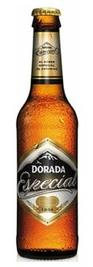

Dorada Especial
- Origen
- Santa Cruz de Tenerife
- Descripción
- Elaborada con 100% malta y un 13% de extracto original que le confiere un intenso color dorado y un sabor fácilmente reconocible a lúpulo y a frutas tropicales.
- Formato de venta
- Botellín de cerveza, 33cl
- Precio
- 1,04€